finanzas contador
Un activo fijo es un bien que la empresa utiliza durante varios ejercicios y cuyo costo se imputa al gasto de forma gradual: la depreciación. El módulo gestiona el alta, la corrida mensual, la baja y la cédula anual.
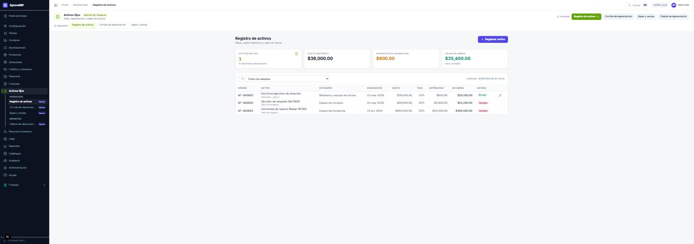
| Campo | Qué es y qué determina | |
|---|---|---|
| codigo | OBLIGATORIO | Identificador del activo. No puede modificarse después: va adherido a una etiqueta física. |
| nombre | OBLIGATORIO | Descripción del bien. |
| categoriaId | OBLIGATORIO | De ella cuelgan la cuenta de activo, la de depreciación acumulada y la de gasto. Es lo que permite que la corrida genere su póliza. |
| fechaAdquisicion | OBLIGATORIO | Cuándo se compró. |
| costoAdquisicion | OBLIGATORIO | Base del cálculo de depreciación. |
| metodo | OBLIGATORIO | LINEA_RECTA, SALDOS_DECRECIENTES o NO_DEPRECIABLE —terrenos, obras de arte—. |
| tasaAnual | OBLIGATORIO si se deprecia | Porcentaje anual. Alternativa a la vida útil. |
| vidaUtilMeses | opcional | Número de meses a depreciar. |
| valorResidual | opcional | Valor esperado al final de la vida útil. Nunca puede superar al costo. |
| fechaInicioDepreciacion | opcional | Desde cuándo se deprecia. No tiene por qué coincidir con la fecha de compra. |
| numeroSerie · marca · modelo | opcional | Ficha descriptiva. |
| ubicacion · responsable | opcional | Dónde está y de quién depende. Es lo que se usa en el inventario físico de activos. |
| Estado | Significado |
|---|---|
| ACTIVO | En uso y depreciándose. |
| EN_MANTENIMIENTO | Fuera de servicio temporalmente; sigue depreciándose. |
| TOTALMENTE_DEPRECIADO | Alcanzó su valor residual. Permanece en el inventario. |
| BAJA | Retirado por obsolescencia, siniestro, donación o robo. |
| VENDIDO | Retirado por venta, con su utilidad o pérdida asentada. |
El lápiz del renglón abre la corrección, gobernada por tres reglas:
| Grupo de campos | Cuándo se puede modificar |
|---|---|
| Ficha descriptiva — nombre, marca, modelo, número de serie, ubicación, responsable, descripción | Siempre. No altera ningún importe ya asentado. |
| Base de cálculo — costo, valor residual, método, tasa, vida útil, fecha de inicio, categoría | Sólo mientras no exista depreciación corrida vigente. Modificarla con corridas aplicadas dejaría los meses anteriores calculados con una base y los siguientes con otra, y la depreciación acumulada sería la suma de dos magnitudes distintas. |
| Código | Nunca. |
Si existen corridas y es necesario modificar la base, el sistema indica el camino disponible: revertir las corridas, corregir y volver a ejecutarlas. Un activo en estado BAJA o VENDIDO no admite edición: su costo ya forma parte de la utilidad o pérdida asentada.
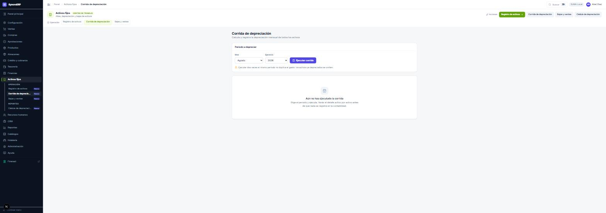
Calcula la depreciación del mes de cada activo en estado depreciable, la acumula, recalcula el valor en libros y genera una póliza: cargo a Gasto por depreciación, abono a Depreciación acumulada, con las cuentas procedentes de la categoría de cada activo.
Activos fijos › Bajas y ventas. La baja exige motivo, y el motivo determina el asiento:
| Motivo | Tratamiento contable |
|---|---|
| VENTA | Compara el precio de venta con el valor en libros y reconoce utilidad o pérdida. El activo pasa a VENDIDO. |
| OBSOLESCENCIA | Cancela el valor restante contra el resultado. El activo pasa a BAJA. |
| SINIESTRO | Igual que obsolescencia; suele acompañarse de una cuenta por cobrar al seguro. |
| DONACION | Cancela el valor restante como donativo. |
| ROBO | Cancela el valor restante como pérdida. |
En todos los casos el activo sale del inventario depreciable y deja de generar gasto.
Reporte anual, activo por activo y mes por mes. Es el documento que se entrega al auditor y el que sustenta la cifra de depreciación acumulada del balance.
Dar de alta un activo con categoría, costo, método, tasa y fecha de inicio. Ejecutar la corrida del mes y localizar su póliza en el libro diario. Intentar después modificar el costo del activo: el sistema debe negarse e indicar el procedimiento correcto.
rrhh tesorería finanzas
La nómina es el proceso con mayor separación de funciones del ERP. El principio: Recursos humanos prepara, revisa y no firma. Eso explica prácticamente todos los bloqueos aparentes del módulo.
| Etapa | Responsable |
|---|---|
| Conceptos, preparación de la aprobación, CFDI, captura de cuentas bancarias | Recursos humanos |
| Dispersión, marca de envío, conciliación y registro del pago | Tesorería |
| Configuración patronal, póliza detallada y cierre financiero | Finanzas / Contabilidad |
| Préstamos y obligaciones | RRHH o Finanzas |
| Validación de una cuenta bancaria | Finanzas o Tesorería — nunca quien la capturó |
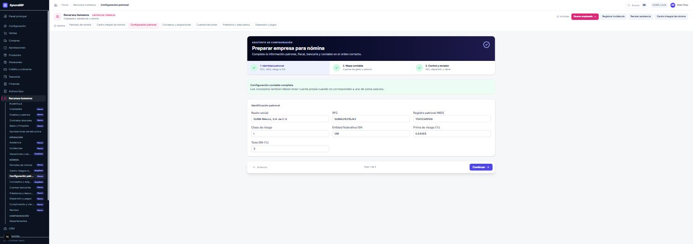
| Dato | Para qué sirve |
|---|---|
| Razón social y RFC del patrón | Emisión del CFDI de nómina. |
| Registro patronal IMSS | Cálculo de cuotas obrero-patronales. |
| Clase de riesgo y prima | Determinan la prima de riesgo de trabajo. |
| Entidad federativa y tasa de ISN | Impuesto sobre nóminas estatal. |
| Mapa contable | Contra qué cuentas se asienta el gasto y el pasivo de nómina. |
| Datos del PAC | Timbrado de los comprobantes. |
Figura en el menú de Recursos humanos, pero el botón de guardar corresponde a Finanzas o Contabilidad. Es la única pantalla del módulo con esa combinación, y es deliberada: quien define el mapa contable es quien lleva la contabilidad. Sin esta configuración la nómina no puede calcularse.
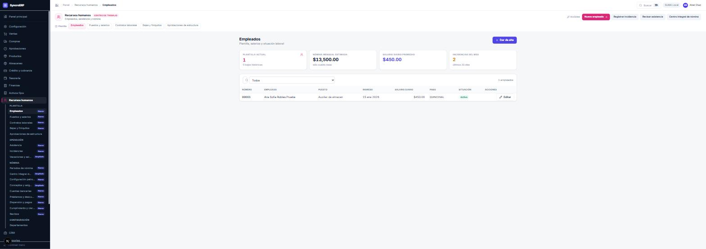
| Campo | Qué es y qué regla lo gobierna | |
|---|---|---|
| nombres | OBLIGATORIO | Hasta 80 caracteres. |
| apellidoPaterno | OBLIGATORIO | Hasta 80 caracteres. |
| apellidoMaterno | opcional | Hasta 80 caracteres. |
| departamentoId | OBLIGATORIO | Unidad organizativa. Determina rutas de aprobación y agrupación del gasto. |
| fechaIngreso | OBLIGATORIO | Base de antigüedad, vacaciones y finiquito. |
| curp | opcional | Formato validado. Necesaria para el CFDI de nómina. |
| rfc | opcional | Formato validado. Necesario para el CFDI. |
| nss | opcional | Sólo dígitos. Necesario para el IMSS. |
| puestoId | opcional | Del puesto hereda el tabulador salarial. |
| jefeDirectoId | opcional | Estructura organizacional. |
| email · telefono | opcional | El correo es el que recibe la invitación de acceso al sistema. |
| numeroEmpleado | opcional | Si se omite, el sistema asigna el siguiente correlativo. |
Estados del empleado: ACTIVO · INCAPACIDAD · VACACIONES · PERMISO · BAJA.
Al dar de alta al empleado, el sistema prepara su identidad en el directorio de SUMA y el correo de activación se emite desde allí. El ERP no solicita ni almacena contraseñas. El rol se asigna después, en Administración › Usuarios.
| Catálogo | Qué define |
|---|---|
| Puestos y salarios | El tabulador: rango salarial del puesto. El empleado hereda de él. |
| Contratos laborales | Tipo —INDETERMINADO · DETERMINADO · POR_OBRA · CAPACITACION · HONORARIOS—, jornada —DIURNA · NOCTURNA · MIXTA— y régimen de pago —SEMANAL · CATORCENAL · QUINCENAL · MENSUAL—. |
| Tipo de salario | FIJO · VARIABLE · MIXTO. Afecta al cálculo del salario base de cotización. |
| Departamentos | Agrupación del gasto y base de las rutas de aprobación. |
RRHH › Incidencias. Son el insumo del cálculo y se capturan antes de calcular. Registrarlas después obliga a recalcular, y recalcular invalida las firmas ya obtenidas.
| Tipo | Efecto en la nómina |
|---|---|
| FALTA | Descuenta el día. |
| RETARDO | Según política; puede acumular para descuento. |
| INCAPACIDAD | Suspende el pago patronal según el tipo y los días a cargo del IMSS. |
| VACACIONES | Consume saldo y genera prima vacacional. |
| PERMISO_CON_GOCE | No descuenta. |
| PERMISO_SIN_GOCE | Descuenta los días. |
| HORAS_EXTRA | Percepción adicional, con el tratamiento fiscal correspondiente. |
Las solicitudes —de vacaciones, permisos— recorren sus propios estados: CAPTURADA · EN_REVISION · APROBADA · RECHAZADA · CANCELADA.
Dos pasos, y el segundo constituye todo el control:
Una cuenta mal capturada dirige el salario de una persona a otro destinatario, y un control ejercido por quien capturó el dato no controla nada. La CLABE se almacena cifrada.
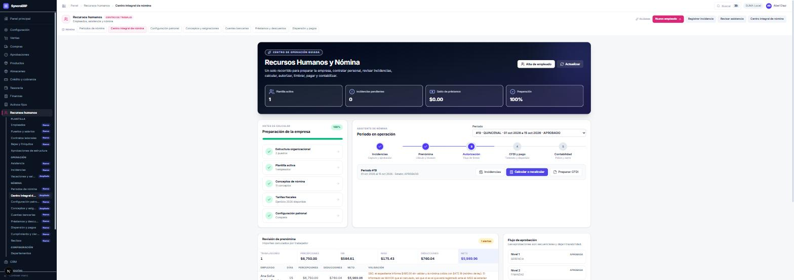
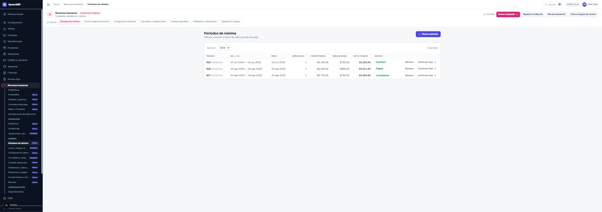
| Estado | Significado |
|---|---|
| ABIERTO | Creado; admite incidencias. |
| CALCULANDO · CALCULADO | En proceso o con prenómina generada. |
| CON_ALERTAS | Calculado, con observaciones que conviene revisar antes de firmar. |
| EN_REVISION | Preparada la aprobación; espera firmas. |
| APROBADO | Todas las firmas obtenidas. |
| CFDI_PREPARADO · TIMBRADO | Comprobantes armados y timbrados. |
| DISPERSION_GENERADA · EN_DISPERSION | Archivo bancario generado y enviado. |
| PAGADO | Conciliado el cargo bancario. |
| CONTABILIZADO | Póliza detallada generada. |
| CERRADO | Periodo concluido. |
| CANCELADO · REVERTIDO | Anulado o deshecho. |
El sistema no acepta pólizas con fecha futura. Si el periodo de nómina concluye el 15 de octubre, su póliza de devengo no puede emitirse en septiembre.
Préstamos y descuentos se amortizan automáticamente en el periodo que corresponda. Estados: ACTIVO · LIQUIDADO · SUSPENDIDO · CANCELADO.
CFDI de nómina recorre los estados BORRADOR · PENDIENTE_PAC · TIMBRADO · ERROR · CANCELADO · SUSTITUIDO.
Completar la configuración patronal. Dar de alta un empleado con su puesto y capturar una incidencia. Calcular el periodo y revisar la prenómina. Preparar la aprobación, volver a calcular deliberadamente e intentar firmar: se observará la caída de las firmas. Volver a preparar, firmar con dos usuarios, dispersar y contabilizar.
hotelería
El módulo hotelero es un sistema de gestión de propiedad integrado en el ERP: reservas, rack, folios, ama de llaves, crédito hotelero y recetas. Todo lo que cobra termina en tesorería y en la contabilidad como cualquier otro documento.
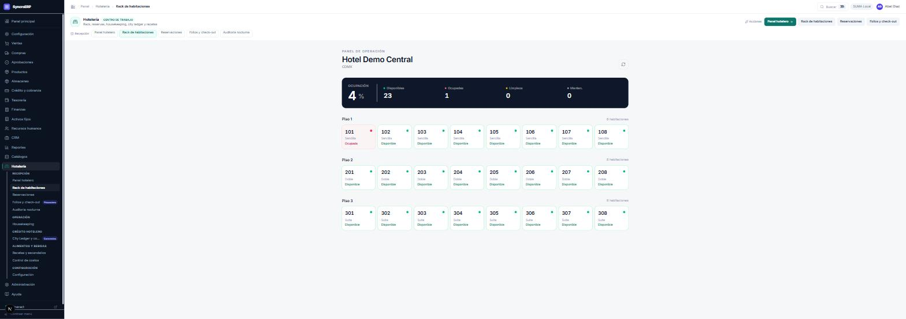
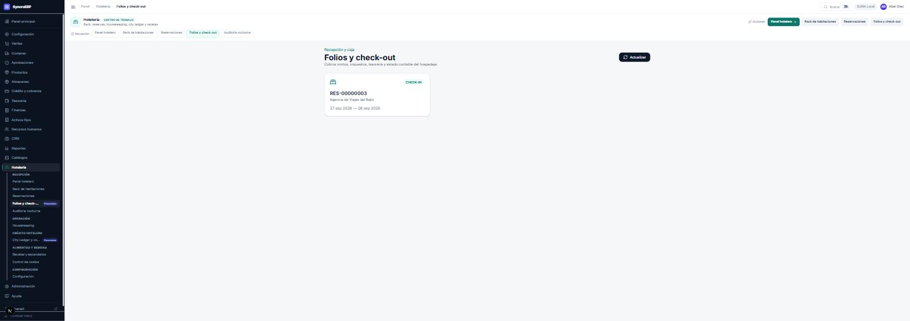
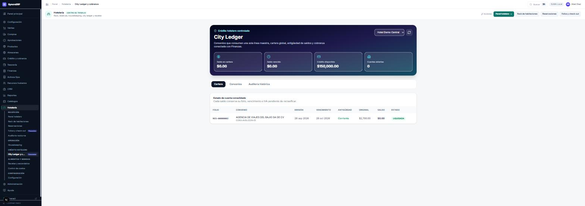
Un convenio de city ledger recorre la matriz de firmas igual que una línea de crédito comercial: es crédito, y determinar cuánto se fía a una agencia no es una decisión de recepción.
Recetas y escandallos define la composición de cada platillo o bebida en materia prima. Al venderse, el sistema consume la materia prima del inventario y valúa el costo real. Control de costos compara el costo teórico de la receta con el consumo real y presenta la desviación, que es donde se aprecia la merma no reportada.
El check-out genera el movimiento de tesorería y la póliza del hospedaje con su IVA. La auditoría nocturna devenga el hospedaje del día. El consumo de receta descuenta materia prima y registra su asiento de costo.
empleado gerencia
El CRM gestiona lo anterior a la venta: el prospecto, la oportunidad y las actividades de seguimiento.
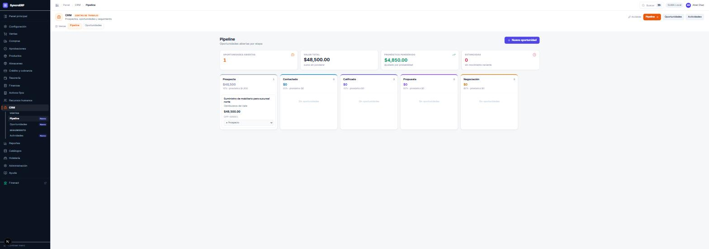
| Indicador | Cómo se calcula y para qué sirve |
|---|---|
| Valor total | Suma del importe de las oportunidades abiertas. Es el techo teórico. |
| Pronóstico ponderado | Importe multiplicado por la probabilidad de la etapa. Es la cifra que sirve para planear. |
| Estancadas | Oportunidades sin movimiento reciente. Es la métrica de la revisión semanal. |
Al ganarse una oportunidad se convierte en cliente y en venta. Actividades registra llamadas, correos y visitas con su próxima fecha de seguimiento.
gobierno gerencia dirección
Este capítulo es transversal: gobierna compras, crédito, nómina, estructura organizacional, alta de proveedores y convenios hoteleros. Conviene leerlo aunque no sea el módulo propio, porque explica el origen de la mayoría de las negativas del sistema.
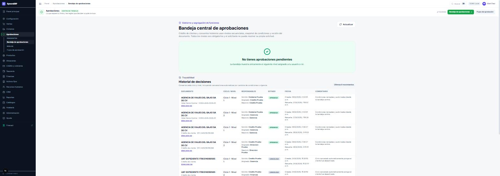
El historial es la parte que suele subestimarse. Conserva cada ciclo y cada nivel, incluidas las cancelaciones automáticas por cambio de condiciones —por ejemplo, un ciclo cancelado porque el cliente se desactivó—. Es el registro que solicita una auditoría.
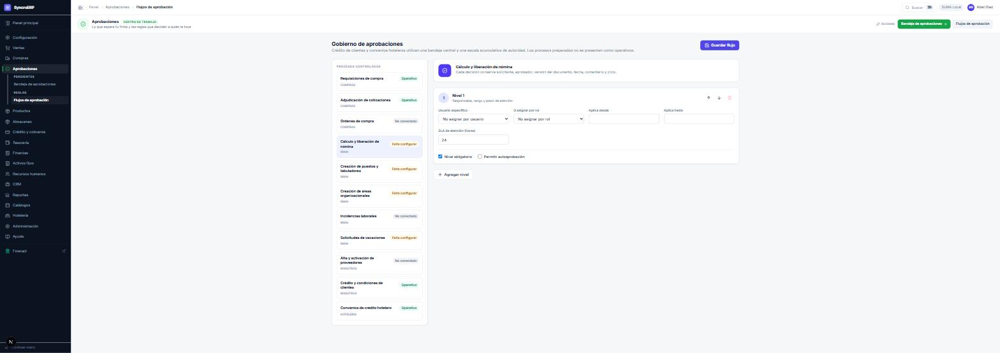
| Campo | Qué determina |
|---|---|
| Usuario específico | Persona concreta que firma. Si se da de baja, entra la suplencia. |
| O asignar por rol | Cualquier persona activa con ese rol. Más robusto que nombrar personas. |
| Aplica desde / Aplica hasta | Rango de importe en el que el nivel es exigible. Es el umbral que decide cuántas firmas se piden. |
| SLA de atención | Horas previstas para resolver. Alimenta los indicadores de retraso. |
| Nivel obligatorio | Si puede omitirse cuando no aplica. |
| Permitir autoaprobación | Excepcional. Habilitarlo anula la separación de funciones de ese nivel. |
| Estado | Significado |
|---|---|
| Operativo | Tiene niveles configurados y firmantes disponibles. |
| Falta configurar | El proceso existe pero carece de niveles o de firmantes. Sus documentos se detendrán. |
| No conectado | El proceso todavía no está enlazado a documentos. |
| Indicación | Significado | Corrección |
|---|---|---|
| Ninguna | El nivel tiene quien lo firme. | — |
| Ámbar: «Este nivel tiene un solo firmante» | Una sola persona puede firmarlo, y esa persona también puede originar el documento. Toda solicitud que ella misma levante será rechazada al guardarse. | Dar de alta otra persona con ese rol, o enrutar el nivel a un rol distinto del que origina. |
| Rojo: «Este nivel no tiene quien lo firme» | Ninguna persona activa tiene ese rol, o la asignada se dio de baja. | Corregir la matriz o reactivar al usuario. |
Una matriz puede parecer impecable y no permitir levantar una sola solicitud: basta con que el único rol capaz de originar el documento sea también el único capaz de firmar su primer nivel. El problema se descubre el día en que alguien intenta trabajar. Por eso el diagnóstico aparece donde se configura, y no donde se sufre.
El rol gobierno define la matriz y tiene vedada la acción de resolver aprobaciones. No es una limitación técnica: es el control mismo. Quien redacta las reglas no las ejecuta.
En Flujos de aprobación, seleccionar «Requisiciones de compra» y añadir un segundo nivel con un rango de importe. Guardar. Levantar una requisición que supere ese importe y comprobar que exige dos firmas en orden. Cambiar después el nivel 1 a un rol sin usuarios activos y observar el diagnóstico en rojo.
gerencia dirección
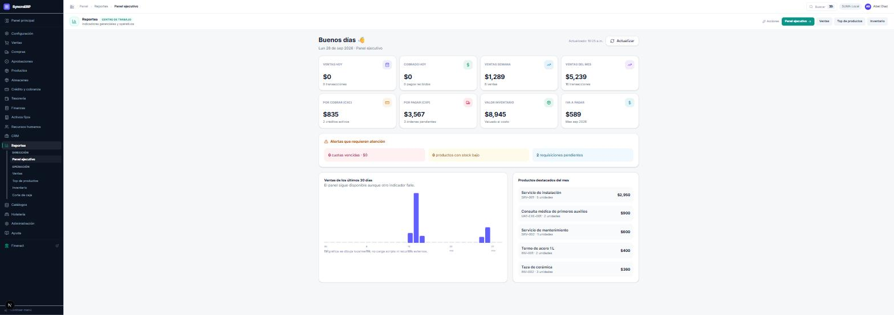
Las alertas que requieren atención son la lectura diaria: cuotas vencidas, productos con existencia baja y requisiciones pendientes de firma. Son las tres situaciones que se deterioran si nadie las revisa.
| Reporte | Uso |
|---|---|
| Panel ejecutivo | Seguimiento diario del negocio. |
| Ventas | Por periodo, vendedor, sucursal y forma de pago. |
| Top de productos | Rotación: qué se vende y qué no se mueve. |
| Inventario | Valuación y rotación de existencias. |
| Corte de caja | Por turno y por cajero, con sus diferencias. |
| Estado de cuenta | Por cliente, con el detalle de su cartera. |
administrador
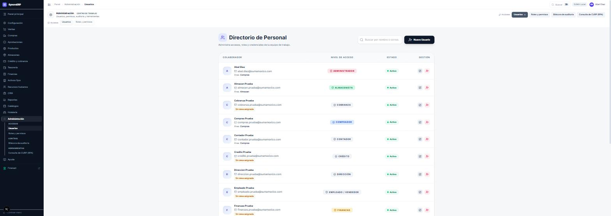
Aquí se asignan el rol y el departamento, y se activa o desactiva el acceso. La contraseña no reside en esta pantalla: reside en SUMA.
Descrito en el capítulo 0.6. Dos utilidades prácticas: «Usar módulos sugeridos» restituye un rol a su plantilla, y el ajuste fino por acción cubre los casos que la plantilla no contempla, quedando marcado como «Ajustado a mano» para que resulte visible.
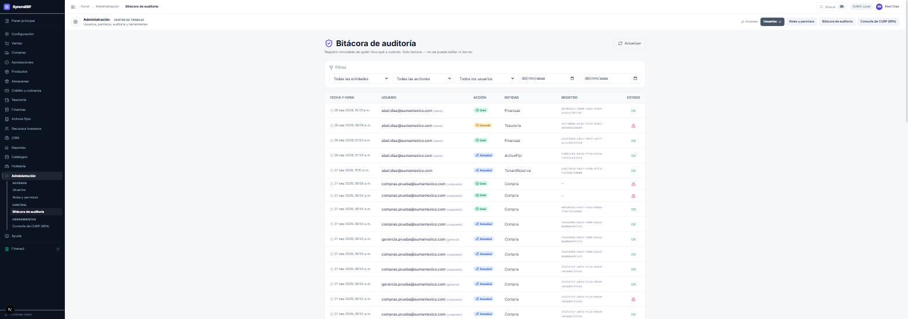
Cada registro almacena una huella criptográfica de su contenido más la huella del registro anterior: la bitácora constituye una cadena, y eliminar o alterar un registro la rompe de forma detectable. La columna Estado refleja el resultado de esa verificación.
Ayuda › Ayuda y documentación. La documentación del sistema dentro del propio ERP, con descarga en PDF. Los manuales de usuario son accesibles a cualquier perfil; la documentación técnica —variables de entorno, arquitectura, límites conocidos— únicamente al administrador.